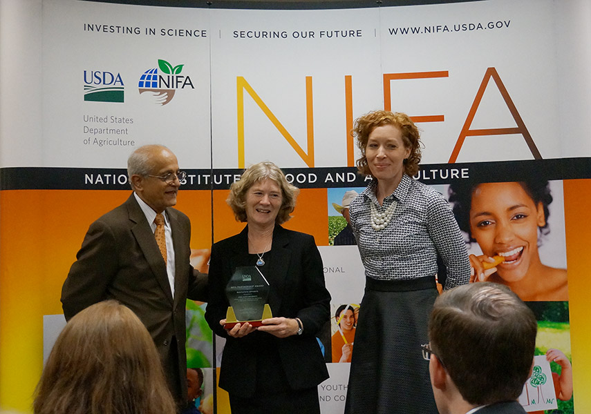

The Sustainable Corn CAP project team was active from 03/2011 through 02/2017. This website serves as a legacy of the project with resources available for farmers and educators. The team's annual reports, proposals, technical reports, and publications are available at http://lib.dr.iastate.edu/sustainablecorn/. The team's research data are available at
|  |
| Sustainable Corn Project Director, Lois Wright Morton (center) and Project Manager Lori Abendroth accept the 2016 USDA-NIFA Partnership Award from NIFA Director Sonny Ramaswamy on Oct. 6. News Release |


Sustainable Corn Blog
Farmers and scientists in the Corn Belt discussing cover crops, weather, tillage, drainage water managment and much more.
Sustainable Corn YouTube Channel
SUSTAINABLECORN.ORG | Website Administrator
This material is based upon work that is supported by the National Institute of Food and
Agriculture, U.S. Department of Agriculture, under award number 2011-68002-30190
Any opinions, findings, conclusions, or recommendations expressed on this website are those of the author(s)
and do not necessarily reflect the view of the U.S. Department of Agriculture.